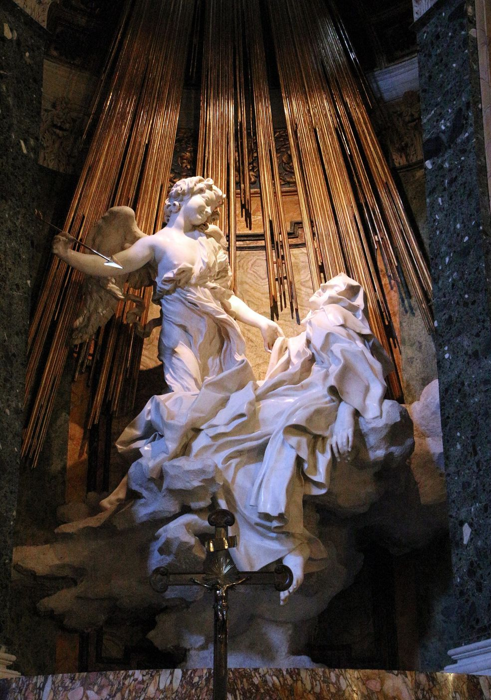

Das Ziel alles Lebens ist der Tod.
Sigmund Freud, Jenseits des Lustprinzips (1920)
Le surmoi, c’est l’impératif de la jouissance — Jouis !
Jacques Lacan, Le Séminaire XX: Encore
I
Fransızcada jouissance kelimesi birkaç anlamı birden taşır. Gündelik dilde bir şeyden alınan keyfi, cinsel dilde orgazmı anlatır; hukuk dilinde ise bir mülkün kullanım ve yararlanma hakkını, mülkiyetten ayrı olarak bir şeyden yararlanabilme yetkisini adlandırır. Lacan kavramı kurarken bu anlamların hiçbirinden tam olarak vazgeçmez; ama hiçbirine de indirgenmesine izin vermez. Türkçedeki olası karşılıklar, keyif, zevk, haz, tatmin, kelimenin bir yanını yakalarken asıl paradoksunu kaçırır: Jouissance, hazzın sınırını aşan, çoğu zaman acıyla iç içe geçen ve öznenin ondan şikâyet ettiği hâlde vazgeçemediği bir tatmindir. Bu yüzden kavramı, tıpkı Lacan’ın diğer kavramları gibi, özgün biçimiyle kullanmak gerekir.
Kelimenin hukuki anlamı, Lacan için bir süs değildir. Fransız Medeni Kanunu’nun 578. maddesi, intifa hakkını, Fransızca usufruit’yü, mülkiyeti başkasına ait olan şeylerden, tıpkı malikin kendisi gibi yararlanma hakkı olarak tanımlar; ama bir koşulla: şeyin özünü korumak. Lacan Encore’un ilk dersine tam bu hukuki kavramla başlar.1 İntifa hakkı, yararlı olan ile keyif alınan arasındaki farkı bir araya getirir: İnsan bir şeyden yararlanabilir, ama onu tüketmemeli, harcamamalı, özünü yok etmemelidir. Jouissance ise tam da bu sınırın aşıldığı yerde başlar. Hukuk, keyfi bir hak olarak düzenlerken onu sınırlar; psikanalizin jouissance dediği şey ise, bu sınırı tanımayan, şeyin özünü tüketmeye, harcamaya, hatta yok etmeye hazır bir tatmindir. Lacan’ın kelimeyi bu hukuki çağrışımıyla birlikte kullanması, jouissance’ın neden her zaman bir yasayla, bir sınırla, bir “buraya kadar” ile birlikte düşünülmesi gerektiğini de hatırlatır. Aynı derste Lacan kısa ve kışkırtıcı bir tanım daha verir: Jouissance, hiçbir işe yaramayan şeydir. Yararlı olan, bir amaca hizmet eden, bir ihtiyacı gideren şey hazzın ekonomisine aittir; jouissance ise bu ekonomiden taşan, hesaba gelmeyen, bir harcamadır. Lacan yine aynı seminerde, canlı olmanın ne demek olduğunu bilmediğimizi, bildiğimiz tek şeyin bir bedenin keyif aldığı olduğunu söyleyecektir.2 Jouissance bir düşünce değil, bedenin içinde, bedenle birlikte yaşanan bir şeydir.
Kavramın klinik kaynağı, psikanalizin en eski şaşkınlıklarından biridir. Freud, hastalarının acı çektiklerini, bu acıdan kurtulmak için ona başvurduklarını, ama tedavi ilerledikçe acılarına tuhaf bir inatla tutunduklarını defalarca gözlemlemişti. Semptomları yorumlandığında yerlerini bir başkasına bırakıyor, iyileşmenin eşiğine gelindiğinde beklenmedik bir kötüleşme yaşanıyordu. Sanki acının kendisinde, sırf acı olmayan bir şey vardı.
Freud bu “acı olmayan şey”i bir hastasının yüzünde, tek bir anda görmüştü. 1907’de tedavisine başladığı Sıçan Adam, ikinci seansında, askerî tatbikatlar sırasında zalim bir yüzbaşının anlattığı korkunç işkenceyi Freud’a aktarmaya çalışır; cümleleri yarım kalır, kalkar, odada dolaşır, Freud’dan kendisini ayrıntıları anlatmaktan muaf tutmasını ister. Freud, hastanın anlatısının en dehşet verici anında yüzünde tuhaf, karmaşık bir ifade belirdiğini yazar ve bu ifadeyi tek bir cümleyle betimler: kendisinin de farkında olmadığı bir hazzın dehşeti.3 Bu cümle, Lacan’ın jouissance kavramının belki de en iyi tanımıdır. Hasta anlattığı şeyden tiksinmekte, onu söylemekten utanmakta, ondan kurtulmak istemektedir; ama yüzünde, bilinçli bütün tutumlarının ötesinde, o sahnenin kendisine verdiği, kendisinin de bilmediği bir tatmin belirir. Jouissance, öznenin bilmediği, ama bedeninin, yüzünün, sesinin ele verdiği bir hazdır.
II
Freud’un ilk kuramsal çerçevesi, haz ilkesi üzerine kuruluydu. Ruhsal aygıt, gerilimi azaltmaya, uyarılmayı olabildiğince düşük ve sabit bir düzeyde tutmaya çalışır; haz, gerilimin boşalması, hoşnutsuzluk ise birikmesidir. Bu çerçevede insanın kendisine acı veren şeye yönelmesi açıklanamaz bir istisnadır. Freud 1920’de, Haz İlkesinin Ötesinde’de, bu istisnaların aslında bir kural olabileceğini düşünmeye başlar. Savaş nevrozlarında kişiyi her gece travmatik sahneye geri götüren rüyalar, torununun annesinin gidişini bir makarayla tekrar tekrar oynadığı oyun ve analizanların tedavide çocukluklarının en acı verici hayal kırıklıklarını yeniden yaşamakta gösterdikleri ısrar, ona haz ilkesinin ötesinde işleyen bir eğilimin varlığını düşündürür.4 Kitabın en spekülatif bölümlerinde bu eğilimi canlı olanın cansız duruma geri dönme isteği olarak yorumlar ve epigraf olarak aldığım cümleyi kurar: Bütün hayatın amacı ölümdür.
Dört yıl sonra, Mazoşizmin Ekonomik Sorunu’nda, Freud aynı düşünceyi klinik bir kavrama bağlar. Mazoşizm artık sadizmin kendine yönelmiş bir biçimi olmaktan önce, birincil bir eğilim olarak düşünülür. Freud bu makalede, kişinin bilinçdışı bir suçluluk duygusuyla cezalandırılmaya ihtiyaç duyduğu ahlaki mazoşizmi ve tedavideki “olumsuz tepki”yi, yani iyileşmenin kendisinin bir tehdit olarak yaşandığı durumları tartışır.5 Lacan’ın jouissance kavramı, bu klinik gözlemlere bir ad verir: Acının içinde, öznenin ondan vazgeçmesini engelleyen bir tatmin vardır.
Freud bu yapının gündelik hayattaki en şaşırtıcı görünümünü, daha 1916’da, “başarıyla yıkılanlar” adını verdiği bir karakter tipinde tarif etmişti. Bu kişiler, uzun zamandır istedikleri bir şeye, bir mevkiye, bir evliliğe, bir başarıya tam kavuştukları anda hastalanır, çöker, her şeyi bozarlar. Freud bu tipin edebiyattaki örneklerini Shakespeare’in Lady Macbeth’inde ve Ibsen’in Rosmersholm’undaki Rebekka West’te bulur: Lady Macbeth, kocasının kral olması için her şeyi göze almış, bunu başardığı anda uykusunda yürüyen, ellerindeki hayalî kanı yıkamaya çalışan bir gölgeye dönüşür; Rebekka West, yıllarca istediği evlilik teklifini nihayet aldığında onu reddeder.6 Freud’a göre bu insanları yıkan şey bir dış yoksunluk değil, bir isteğin gerçekleşmesidir; ve onları gerçekleşmiş istekten alıkoyan şey, bilinçdışı bir suçluluk duygusudur. Lacan’ın diliyle, burada bir jouissance ekonomisi işler: Başarının vaat ettiği haz, bilinçdışında yasak bir hazla, belki bir babanın yerini almakla, bir rakibi alt etmekle düğümlenmiştir; ve özne, bu hazza kavuşmak yerine, cezanın, çöküşün, kaybın içinde bambaşka bir tatmin bulur.
III
Lacan kavramı ilk kez sistemli biçimde, 1959–1960 yıllarında verdiği etik seminerinde işler. Freud’un Taslak’ından aldığı das Ding, yani Şey kavramı, bu seminerin merkezindedir: öznenin ulaşmaya çalıştığı, ama ulaştığı anda onu yok edecek olan mutlak nesne. Haz ilkesi, Lacan’ın okumasında, özneyi bu Şey’den uygun bir mesafede tutan bir düzenleyicidir; jouissance ise bu mesafenin aşıldığı, hazzın acıya dönüştüğü yerdir. Lacan aynı seminerde, kişinin komşusunu kendisi gibi sevmesi buyruğunu tartışırken, komşunun içinde kendi jouissance’ımızın, yani kendi içimizdeki o kötücül, bizi aşan çekirdeğin bir yansımasını bulduğumuzu öne sürer. Freud’un Uygarlığın Huzursuzluğu’nda bu buyruğa yönelttiği şüpheci sorular, Lacan’ın elinde bir etiğin başlangıç noktasına dönüşür.7
Lacan bu düşünceyi 1963’te yayımlanan Kant ile Sade başlıklı metinde en kışkırtıcı biçimine kavuşturur. Metnin tezi, Sade’ın Yatak Odasında Felsefe’sinin, Kant’ın Pratik Aklın Eleştirisi’nin doğruluğunu tamamladığıdır. Kant’ın ahlak yasası, bütün kişisel çıkarlardan ve duygulardan arınmış, evrensel bir buyruktur; Lacan, Sade’ın metinlerinde aynı biçimsel yapıya sahip bir başka buyruğun, herkesin herkesin bedeninden sınırsızca yararlanma hakkını ilan eden bir jouissance buyruğunun yankılandığını gösterir.8 Ahlak yasası ile jouissance arasındaki bu tekinsiz yakınlık, psikanalizin üstben kavramını yeniden düşünmesine yol açar.
Metnin kendi tarihi de bu tekinsizliğe uygun düşer. Lacan “Kant ile Sade”ı, Sade’ın yapıtlarının yeni bir toplu basımı için, Yatak Odasında Felsefe’ye bir önsöz olarak yazmıştı; metin sonunda önsöz olarak kullanılmadı ve 1963’te Critique dergisinde yayımlandı.9 Sade’ın kendisi hayatının yaklaşık otuz yılını hapishanelerde ve tımarhanelerde geçirmişti. 1785’te, Bastille’deki hücresinde, Sodom’un 120 Günü’nü, kâğıt yaprakları birbirine yapıştırarak oluşturduğu on iki metreyi aşan bir tomarın üzerine, minicik bir yazıyla yazdı; 1789’da Bastille’in basılmasından birkaç gün önce başka bir yere nakledildi ve tomarı geride kaldı. Sade elyazmasının yok olduğunu sanarak, ölene dek ona kanlı gözyaşları döktüğünü yazdı; tomar ise yıllar sonra bulundu ve ancak yirminci yüzyılda yayımlanabildi.10 Yatak Odasında Felsefe ise 1795’te, Devrim’in ortasında yayımlandı; içinde, Fransızlara cumhuriyetçi olmak istiyorlarsa bir çaba daha göstermelerini öğütleyen, her türlü yasağın kaldırılmasını savunan ünlü bir bildiri de vardır.
Lacan’ın Kant’la Sade arasında kurduğu bağın anahtarı, Kant’ın Pratik Aklın Eleştirisi’nde verdiği bir örnektir. Kant, şehvetine karşı koyamadığını söyleyen bir adamı düşünmemizi ister: Arzuladığı kadınla bir gece geçirebileceği evin önüne, o geceden sonra onu asmak için bir darağacı kurulsa, yine de şehvetine boyun eğer miydi? Kant’a göre hayır; hayatını kaybetme korkusu, şehvetten daha güçlüdür. Ama aynı adamdan, prensinin onu ölümle tehdit ederek dürüst bir adama karşı yalan yere tanıklık etmesini istediğini düşünelim: Bu kez adam, ölümü göze alarak reddedebilir. Kant bu örnekten, ahlak yasasının, en güçlü doğal eğilimden, yaşama isteğinden bile daha güçlü olabileceği sonucunu çıkarır.11 Lacan bu örneğin ilk yarısına itiraz eder. Darağacının bir caydırıcı olmaktan çıkıp arzunun kendisini kışkırttığı insanlar vardır: ölümü göze alarak sevgilisine giden saray âşığı, tehlikenin hazzı artırdığı bir sapkın, ya da hayatı pahasına bir arzuyu sürdüren bir trajedi kahramanı. Jouissance, haz ilkesinin ve yaşama isteğinin hesabını bozan şeydir. Kant’ın ahlak yasası da Sade’ın jouissance buyruğu da bu hesabın ötesinde, yaşamın kendisini hiçe sayabilen bir buyruk olarak konuşur.
Freud’un üstbeni, yasakların ve vicdanın merciidir. Lacan ise 1972–1973’teki Encore seminerinin ilk dersinde, bu mercinin asıl buyruğunun bir yasak değil, bir emir olduğunu söyler: Hiçbir şey kimseyi keyif almaya zorlamaz, üstben dışında; üstben, jouissance’ın buyruğudur: Keyif al!12 Bu formül, çağdaş toplumun ruh hâlini anlamak için de beklenmedik bir anahtar sunar. Bugün insanları en çok ezen şey çoğu zaman bir yasak değil, mutlu olma, tatmin olma, hayatın tadını çıkarma zorunluluğudur; ve bu zorunluluk karşısında hissedilen yetersizlik, eski yasakların yarattığı suçluluktan daha az yıkıcı değildir.
Freud üstbenin bu tuhaf ekonomisini, Lacan’dan önce, Uygarlığın Huzursuzluğu’nun yedinci bölümünde tarif etmişti. Gündelik bir sezgiyle, iyi davranan birinin vicdanının rahat olacağını düşünürüz. Freud ise tam tersini gözlemler: Bir insan ne kadar erdemliyse, vicdanı da o kadar sert ve kuşkucu davranır; azizler kendilerini en büyük günahkârlar olarak suçlar. Üstben, kendisine verilen her tavizle, bastırılan her saldırganlıkla beslenir ve daha fazlasını ister.13 Lacan’ın jouissance kavramı bu kısır döngüye bir ad verir: Üstbenin özneyi eleştirmesinde, aşağılamasında, cezalandırmasında bir haz vardır. Klinikte sık karşılaşılan iç sesi, her başarıyı küçümseyen, her hatayı büyüten, kişiyi sürekli yetersiz bulan o sesi dinlerken, onun bir uyarıdan, bir ahlaktan çok, tükenmez bir tatmin kaynağı gibi işlediğini fark etmek, analitik çalışmanın önemli anlarından biridir.
IV
Freud’un jouissance’ın yapısını en açık biçimde gösteren metinlerinden biri, 1919’da yayımladığı Bir Çocuk Dövülüyor’dur. Freud bu makalede, birçok analizanının utanarak itiraf ettiği yaygın bir fantazmı inceler: Bir çocuğun dövüldüğünü hayal etmek ve bu hayale mastürbatuvar bir tatminin eşlik etmesi. Freud fantazmın üç evreden geçtiğini gösterir. İlk evrede fantazm, “Babam nefret ettiğim çocuğu dövüyor” biçimindedir. İkinci evrede, hiçbir zaman bilince çıkmayan ve ancak analitik çalışmanın yeniden kurabildiği bir biçim alır: “Babam beni dövüyor.” Üçüncü evrede ise fantazm, öznenin yalnızca seyirci olarak yer aldığı anonim bir sahneye dönüşür: “Bir çocuk dövülüyor.”14 Makalenin dersi, tatminin en yoğun olduğu evrenin, yani babanın sevgisinin dayakla, cezanın arzuyla birleştiği ikinci evrenin, tam da bilinçdışında kalan evre olmasıdır. Jouissance, öznenin kendisinin bile bilmediği bir sahnede, acı ile sevginin düğümlendiği yerde yaşanır.
Lacan bu düğümü, 1964’teki on birinci seminerde dürtü kavramını yeniden düşünürken bir başka açıdan ele alır. Freud’un dürtünün kaynağı, itkisi, nesnesi ve amacı üzerine yaptığı ayrımı okurken, İngilizcenin iki kelimesinden yararlanır: aim ve goal. Dürtünün hedefi, ulaşılacak bir nokta değil, izlenen bir yoldur; dürtü nesnesine ulaşarak değil, onun etrafında dönerek tatmin olur.15 Freud’un 1905’te bebeğin parmak emmesini anlatırken kurduğu imge, bu yapının ilk taslağıdır: Bebek, açlığı doyduktan sonra da emmeye devam eder, bu kez bir besin için değil, emmenin kendisi için. Freud bu etkinliği, dudakların kendi kendilerini öpmesi gibi bir otoerotizm olarak tarif eder; Lacan ise bu imgeyi, kendi kendini öpen bir ağız imgesini, dürtünün döngüsel yapısının bir resmi olarak yeniden kullanır.16 Bu formül, bugün “bağımlılık” dediğimiz pek çok deneyimi açıklamak için beklenmedik bir anahtar sunar. Bir ekranı saatlerce kaydırmak, aynı yiyeceğe tekrar tekrar dönmek, aynı kişiye yeniden yazmak, bir nesneye ulaşma çabasından çok, nesnenin etrafında dönmenin kendisinden alınan bir tatminin ifadesidir. Döngü tatmin etmez, ama durmak da mümkün değildir; jouissance, tam olarak bu döngünün kendisidir.
Edebiyatta bu döngünün en çıplak tanığı, Dostoyevski’nin kumar tutkusudur. Dostoyevski 1860’larda Almanya’nın kaplıca kentlerindeki kumarhanelerde, ruletin başında, defalarca bütün parasını, karısının mücevherlerini, kendi paltosunu kaybetti; her kayıptan sonra karısına, bir daha oynamayacağına yeminler ettiği, af dileyen mektuplar yazdı ve her seferinde yeniden oynadı. 1866’da, bir yayıncıyla yaptığı ağır bir sözleşmenin süresi dolmak üzereyken, Kumarbaz’ı yirmi altı günde, genç bir stenografa yazdırarak bitirdi; ertesi yıl o stenografla, Anna Snitkina’yla evlendi.17 Freud 1928’de Dostoyevski üzerine yazdığı denemede bu tutkuyu inceler ve tuhaf bir ayrıntıya dikkat çeker: Dostoyevski her şeyini kaybettiğinde, bir rahatlama, bir hafiflik duyuyor ve ancak o zaman yeniden yazabiliyordu. Freud’a göre kumar, bir kendini cezalandırma biçimiydi; kaybetmek, bilinçdışı bir suçluluk duygusunun ödettiği bedeldi ve bu bedel ödendiğinde yaratıcılık yeniden mümkün oluyordu.18 Kumarın jouissance’ı kazanmakta değil, kazanma ile kaybetme arasındaki o gerilimin, o dönüp duran topun kendisindedir; ve en derin tatmin, belki de, her şeyin kaybedildiği andadır.
V
Jouissance kavramının klinik değeri, semptomun inadını açıklamasındadır. Freud semptomu, bastırılmış bir isteğin kılık değiştirmiş ifadesi olarak, yani yorumlanabilir bir mesaj olarak düşünmüştü; ama yorumlanan bir semptomun çoğu zaman çözülmediğini de görmüştü. Lacan’a göre semptom yalnızca bir mesaj değil, aynı zamanda bir jouissance düzeneğidir: Öznenin bilinçdışı çatışmasını hem söyler hem de o çatışmadan ortaya çıkan özgül tatmin biçimini barındırır. Yorum mesajı çözebilir, ama jouissance’ı dağıtmaz. Yıllardır aynı ilişki örüntüsünü tekrar eden, terk edilen, yıkılan ve bir sonraki ilişkiye aynı konumdan giren biri, bilinçli olarak değişmek ister; ama bilinçdışının bir yerinde bu örüntünün kendisi bir şey üretmektedir. Acı verici olan, aynı zamanda tatmin eder; ve bu tatmin, kişinin kendisine bile itiraf edemediği, adını koyamadığı bir yerde, bilincin hiç uğramadığı bir sahnede yaşanır.
Lacan 1969–1970’teki on yedinci seminerinde, kapitalizmin çözümlemesine de uzanan bir kavram önerir: artı-keyif. Öznenin dile ve topluma girişi bir jouissance kaybıyla gerçekleşir; ama bu kayıp, Marx’ın artı değerine benzer biçimde, bir artık olarak geri döner ve arzunun nedeninin yerini tutar.19 Tüketim toplumunun sürekli yeni nesneler, yeni deneyimler, yeni hazlar vaat eden mantığı, bu artığı yakalamaya çalışan bitmeyen bir arayış olarak okunabilir.
VI
Lacan’ın jouissance kuramının en çok tartışılan bölümü, Encore’da yaptığı ayrımdır. Lacan burada, dilin, sınırın ve eksikliğin jouissance’ı olarak tanımladığı fallik jouissance ile, bu mantığın dışında kalan, dile gelmeyen bir başka jouissance’ı birbirinden ayırır ve bu ikinci jouissance’ı, cinsiyetlenme formüllerinde kadın konumuyla ilişkilendirir. Bu ayrım anatomik değil, mantıksaldır; her özne, kendi yapısına göre bu iki jouissance arasında bir yerde durur.
Lacan bu öteki jouissance’ın bir izini, mistiklerin tanıklıklarında bulur ve seminerin en çok alıntılanan anlarından birinde Roma’daki bir heykele işaret eder: Bernini’nin Santa Maria della Vittoria kilisesindeki Azize Teresa heykeline bakmanın, azizenin bir jouissance içinde olduğunu hemen anlamaya yeteceğini söyler; mistiklerin temel tanıklığı, bu jouissance’ı yaşadıkları ama onun hakkında hiçbir şey bilmedikleridir.20 Teresa’nın kendi anlatımı da bu paradoksu taşır: Otobiyografisinde, bir meleğin ucu ateşli altın bir mızrağı kalbine birkaç kez sapladığını, acının kendisini inletecek kadar büyük, ama bu acının tatlılığının da onu dindirmeyi istemeyeceği kadar aşırı olduğunu yazar.21

Bu pasaj feminist düşünürlerin sert eleştirilerine konu olmuştur. Luce Irigaray, Encore’a yanıt olarak yazdığı metinlerde, Lacan’ın kadın jouissance’ını yine bir erkeğin bakışı ve bir erkek sanatçının yapıtı üzerinden tanımladığını, kadınların kendi sözünü değil, onlar hakkında konuşan bir söylemi merkeze aldığını vurgular.22 Cornaro Şapeli’nin mimarisi, bu eleştiriye beklenmedik bir destek sunar: Bernini, azizenin vecdini, iki yandaki localardan onu izleyen erkeklerin bakışı altında sahnelemiştir. Teresa’nın deneyimi, en başından beri, izlenen bir deneyimdir.
VII
Lacan’ın etik seminerinde jouissance’ın sınırlarını düşünürken başvurduğu en güçlü figür, Sophokles’in Antigone’sidir. Kral Kreon, Thebai’ye karşı savaşmış Polyneikes’in cesedinin gömülmesini yasaklar; kız kardeşi Antigone yasağa karşı gelir, kardeşini gömer ve diri diri bir mağaraya kapatılmaya mahkûm edilir. Lacan bu trajediyi, Hegel’in klasik okumasından farklı olarak, iki yasanın çatışması olarak değil, bir arzunun sonuna kadar sürdürülmesi olarak okur. Antigone, Lacan’ın deyişiyle “iki ölüm arasında”, biyolojik ölümünden önce simgesel olarak ölmüş bir varlık olarak durur ve bu sınır bölgesinden, trajedinin bütün sahnesini aydınlatan bir parıltı yayılır.23 “İki ölüm” ifadesini Lacan, beklenmedik bir biçimde, yine Sade’dan alır. Sade’ın Juliette’inde Papa VI. Pius’a söylettiği uzun bir konuşmada, doğanın kendisini yeniden yaratabilmesi için, bireylerin biyolojik ölümünün yetmediği, onları doğanın döngüsünden bütünüyle silecek ikinci bir ölümün, mutlak bir suçun hayal edildiği bir sistem anlatılır.24 Lacan bu fikirden, simgesel ölüm ile biyolojik ölüm arasındaki aralığı düşünmek için yararlanır. Lacan’a göre güzellik, tam da bu parıltı olarak, öznenin Şey’e, yani yıkıcı bir jouissance’a fazla yaklaşmasını engelleyen son perdedir. Antigone’nin güzelliği bizi büyüler, çünkü bizi onun gittiği yerden korur.
Jouissance ile arzu arasındaki ilişki, Lacan’ın etiğinin düğüm noktasıdır ve sanıldığı gibi basit değildir. Gündelik bir sezgiyle, arzunun jouissance’a ulaşmak istediğini, onun peşinden koştuğunu düşünürüz. Lacan ise 1960’ta tam tersini söyler: Arzu bir savunmadır, jouissance’ta bir sınırı aşmaya karşı bir savunma.25 Arzu, eksikliğin etrafında döner, onu açık tutar, bir sonraki nesneye kayar; ve bu kayış, özneyi bütünüyle yutacak bir jouissance’tan korur. Arzulayan özne, tam da arzuladığı için, kendini tüketecek bir hazzın içine düşmez. Lacan’ın etik seminerinde dile getirdiği, sonradan çok alıntılanacak formül de bu bağlamda anlaşılmalıdır: İnsanın suçlu olabileceği tek şey, arzusundan taviz vermiş olmaktır.26 Bu cümle bir hazcılık, “canın ne isterse yap” çağrısı değildir. Arzusundan taviz veren özne, çoğu zaman bir rahatlığa, bir güvenceye değil, kör bir jouissance’a, bir semptomun, bir tekrarın, bir bağımlılığın kapalı döngüsüne düşer. Arzuyu sürdürmek, jouissance’ın yıkıcı çekiminden korunmanın da yoludur.
VIII
Psikanaliz jouissance’ı ortadan kaldırmayı vaat etmez. Böyle bir vaat dürüst olmazdı; çünkü jouissance yaşamın kendisinden ayrılamaz, öznenin bedenine ve tarihine kazınmış bir şeydir. Yapılabilecek olan, öznenin jouissance ile ilişkisini değiştirmektir: onu daha az yıkıcı, daha az tekrar eden, daha az kör bir biçimde taşıyabilmesini sağlamak. Lacan son dönem seminerlerinde, analizin sonunda öznenin semptomundan kurtulmasından çok, onunla yapabilmeyi, onu tanıyıp ondan bir şey yapmayı öğrenmesinden söz eder. Bu bir teslimiyet değildir. Kendisine acı veren bir döngünün içinde, o döngünün neyi tatmin ettiğini, kimin adına, hangi eski sahne için döndüğünü bilen biri, artık onun içinde kör bir biçimde dönmek zorunda kalmaz; bir yerinden çıkabilir, onu yavaşlatabilir, ona başka bir yön verebilir.
Jouissance, klinik düşünmenin merkezinde durur ama hakkında konuşmak hâlâ zordur; belki de tam olarak bu yüzden. Konuştuğumuz an onu kaçırırız; söz, jouissance’ın bir kısmını öteler, onu başka bir yere taşır. Klinik bu paradoksun içinde işler: jouissance’ı konuşarak değiştirmek, ama onu tümüyle konuşmanın imkânsızlığını da kabul etmek. Bernini’nin taşa yazdığı, Teresa’nın kelimelerle anlatmaya çalışıp anlatamadığı, Sıçan Adam’ın yüzünde bir an beliren, Dostoyevski’nin rulet masasında aradığı şey, tam da bu imkânsızlığın kendisidir.
Notlar
- Code civil, madde 578: « L’usufruit est le droit de jouir des choses dont un autre a la propriété, comme le propriétaire lui-même, mais à la charge d’en conserver la substance. » Lacan, Le Séminaire, Livre XX: Encore (1972–1973), 21 Kasım 1972 tarihli ilk ders. ↩︎
- Lacan, Encore: « La jouissance, c’est ce qui ne sert à rien »; ve aynı seminerde, bedenin kendisinin bir keyif alan töz olduğu düşüncesi: « un corps, cela se jouit ». ↩︎
- S. Freud, “Bemerkungen über einen Fall von Zwangsneurose” (1909), Gesammelte Werke, VII; SE X. Freud’un ifadesi şöyledir: Grausen vor seiner ihm selbst unbekannten Lust. ↩︎
- S. Freud, Haz İlkesinin Ötesinde (1920), SE XVIII. Freud’un metinleri için Türkçe adlar verilmiş, cilt numaraları Standard Edition’a (SE) göre belirtilmiştir. ↩︎
- S. Freud, “Mazoşizmin Ekonomik Sorunu” (1924), SE XIX. ↩︎
- S. Freud, “Einige Charaktertypen aus der psychoanalytischen Arbeit” (1916), Gesammelte Werke, X; SE XIV, ikinci bölüm: “Die am Erfolge scheitern”. Freud bu kişilerin hastalığının, bir dış yoksunluktan değil, bir isteğin gerçekleşmesinden doğduğunu vurgular. ↩︎
- J. Lacan, Le Séminaire, Livre VII: L’éthique de la psychanalyse (1959–1960), Paris: Seuil, 1986; S. Freud, Uygarlığın Huzursuzluğu (1930), SE XXI. ↩︎
- J. Lacan, “Kant avec Sade” (1963), Écrits (1966), s. 765–790. ↩︎
- Lacan’ın metni, Cercle du livre précieux yayınevinin 1960’larda hazırladığı Sade külliyatının La Philosophie dans le boudoir cildi için yazılmış, ancak yayınevinin tercihiyle önsöz olarak basılmamış, Critique dergisinin 191. sayısında (Nisan 1963) yayımlanmıştır. ↩︎
- Tomarın serüveni için bkz. M. Lever, Donatien Alphonse François, marquis de Sade, Paris: Fayard, 1991. Elyazması 2017’de Fransa tarafından ulusal hazine ilan edilmiştir. ↩︎
- I. Kant, Kritik der praktischen Vernunft (1788), birinci kitap, § 6, açıklama. Lacan örneği hem Le Séminaire, Livre VII’de hem “Kant avec Sade”da ele alır. ↩︎
- J. Lacan, Le Séminaire, Livre XX: Encore (1972–1973), Paris: Seuil, 1975, ilk ders: “Rien ne force personne à jouir, sauf le surmoi. Le surmoi, c’est l’impératif de la jouissance — Jouis !” ↩︎
- S. Freud, Das Unbehagen in der Kultur (1930), Gesammelte Werke, XIV; SE XXI, yedinci bölüm. Freud burada, dürtüden yapılan her vazgeçişin üstbenin sertliğini azaltmak yerine artırdığını, vicdanın bir kısır döngü içinde işlediğini öne sürer. ↩︎
- S. Freud, “Bir Çocuk Dövülüyor” (1919), SE XVII. ↩︎
- J. Lacan, Le Séminaire, Livre XI: Les quatre concepts fondamentaux de la psychanalyse (1964), Paris: Seuil, 1973, dürtü üzerine dersler. ↩︎
- S. Freud, Drei Abhandlungen zur Sexualtheorie (1905), Gesammelte Werke, V, ikinci deneme. Freud bebeğin, kendi dudaklarını öpebilmeyi isteyeceğini, bunun mümkün olmamasının bir yetersizlik duygusu yarattığını yazar; Lacan seminerde dürtünün kapalı devresini kendi kendini öpen bir ağız olarak betimler. ↩︎
- Dostoyevski’nin kumar yıllarına dair en değerli tanıklık, Anna Grigoryevna Dostoyevskaya’nın günlükleri ve anılarıdır. Kumarbaz, yayıncı Fyodor Stellovski’yle yapılan ve zamanında teslim edilmezse Dostoyevski’nin gelecekteki bütün yapıtlarının haklarını yayıncıya bırakacak bir sözleşme yüzünden, Ekim 1866’da yirmi altı günde yazıldı. ↩︎
- S. Freud, “Dostojewski und die Vatertötung” (1928), Gesammelte Werke, XIV; SE XXI. Freud kumar tutkusunu çocukluk mastürbasyonunun bir yerine geçmesi ve onun etrafındaki suçluluk duygusunun tekrarı olarak da yorumlar; bu yorumunu Stefan Zweig’ın bir öyküsü üzerinden geliştirir. ↩︎
- J. Lacan, Le Séminaire, Livre XVII: L’envers de la psychanalyse (1969–1970), Paris: Seuil, 1991. ↩︎
- Lacan, Encore, “Dieu et la jouissance de La femme” dersi. ↩︎
- Ávilalı Teresa, Libro de la Vida (y. 1565), 29. bölüm. ↩︎
- L. Irigaray, Speculum de l’autre femme (1974), özellikle “La Mystérique”; Ce sexe qui n’en est pas un (1977), “Così fan tutti”. ↩︎
- Lacan, Séminaire VII, Antigone üzerine dersler; Sophokles, Antigone (MÖ y. 441). ↩︎
- Sade, Histoire de Juliette (1797–1801), Papa VI. Pius’un Juliette’e anlattığı sistem. Lacan bu bölümü Le Séminaire, Livre VII’nin ikinci ölüm üzerine derslerinde ele alır. ↩︎
- J. Lacan, “Subversion du sujet et dialectique du désir dans l’inconscient freudien” (1960), Écrits, Paris: Seuil, 1966: « Car le désir est une défense, défense d’outre-passer une limite dans la jouissance. » ↩︎
- Lacan, Le Séminaire, Livre VII: L’éthique de la psychanalyse, son dersler: « la seule chose dont on puisse être coupable, c’est d’avoir cédé sur son désir ». ↩︎
Kaynakça
- Freud, S. (1905). Drei Abhandlungen zur Sexualtheorie. Gesammelte Werke, V.
- Freud, S. (1920). Haz İlkesinin Ötesinde. SE XVIII.
- Freud, S. (1924). Mazoşizmin Ekonomik Sorunu. SE XIX.
- Freud, S. (1919). Bir Çocuk Dövülüyor. SE XVII.
- Freud, S. (1930). Uygarlığın Huzursuzluğu. SE XXI.
- Freud, S. (1928). Dostojewski und die Vatertötung. Gesammelte Werke, XIV; SE XXI.
- Freud, S. (1909). Bemerkungen über einen Fall von Zwangsneurose. Gesammelte Werke, VII; SE X.
- Freud, S. (1916). Einige Charaktertypen aus der psychoanalytischen Arbeit. Gesammelte Werke, X; SE XIV.
- Kant, I. (1788). Kritik der praktischen Vernunft. Riga: Hartknoch.
- Irigaray, L. (1974). Speculum de l’autre femme. Paris: Minuit.
- Irigaray, L. (1977). Ce sexe qui n’en est pas un. Paris: Minuit.
- Lacan, J. (1966). Kant avec Sade (1963); Subversion du sujet et dialectique du désir dans l’inconscient freudien (1960). Écrits içinde. Paris: Seuil.
- Lacan, J. (1975). Le Séminaire, Livre XX: Encore (1972–1973). Paris: Seuil.
- Lacan, J. (1986). Le Séminaire, Livre VII: L’éthique de la psychanalyse (1959–1960). Paris: Seuil.
- Lacan, J. (1991). Le Séminaire, Livre XVII: L’envers de la psychanalyse (1969–1970). Paris: Seuil.
- Lacan, J. (1973). Le Séminaire, Livre XI: Les quatre concepts fondamentaux de la psychanalyse (1964). Paris: Seuil.
- Lever, M. (1991). Donatien Alphonse François, marquis de Sade. Paris: Fayard.
- Sade, D. A. F. de (1797–1801). Histoire de Juliette, ou les Prospérités du vice.
- Sade, D. A. F. de (1795). La Philosophie dans le boudoir. Londres [Paris].
- Sophokles. Antigone.
- Teresa de Ávila. Libro de la Vida.